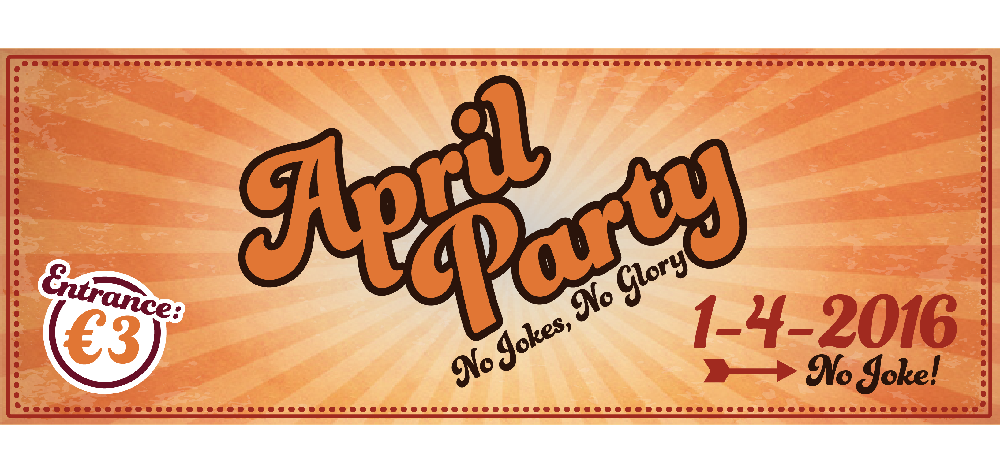
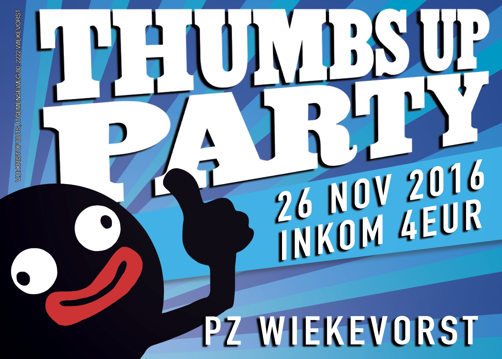
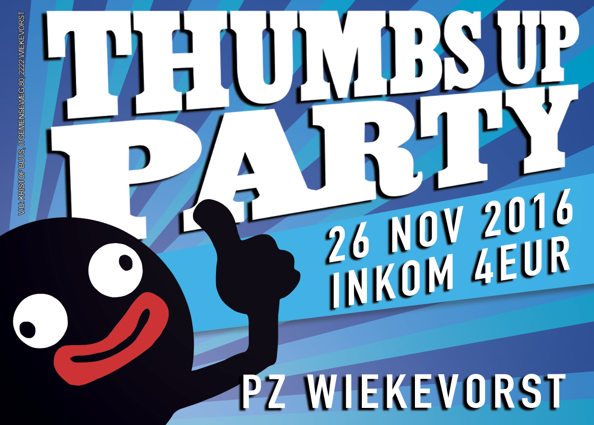
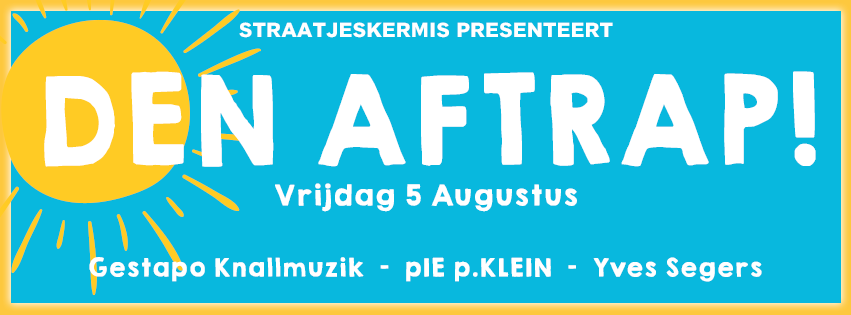
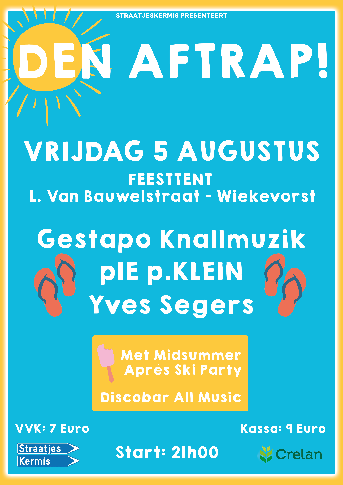
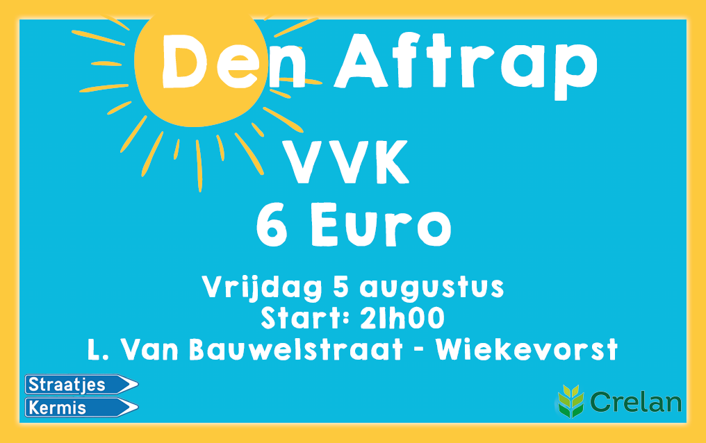

Aprilparty
Het was zomer 2015 en een vriend van mij gaf een feestje. Long story long, er kwamen veel meer mensen opdagen dan verwacht en het liep een beetje uit de hand. Zo kwam hij op het idee om dit over te doen, maar dan beter geregeld. Zo is er op 1 april 2016 de Aprilparty ontstaan. De affiche mocht ik ontwerpen.

Filmconcert
De Jeugdfanfare van KFOW organiseerde in het najaar een filmconcert. De muziek van het concert was afkomstig van allerlei bekende films.


Het Derde Been
Dit project was een heuse taak uit schooljaar 2015-2016.
De bedoeling was dat we voor een bepaalde doelgroep een volledige pop-up store moesten bedenken en uitwerken.
Bij zo'n winkel hoort uiteraard ook een website, en de uitwerking hiervan had ik binnen dit groepswerk voor mijn rekening genomen. Mocht ik nu nog eens een site moeten maken, dan zou ik het volledig anders aanpakken. Maar mijn kennis toen stond nog niet zo ver als nu.
Website:
Boeren Fuif
Om de twee jaar organiseert onze fanfare de Hoevenfeesten in het dorp. In 2016 werd er besloten om zaterdag van het feestweekend af te sluiten met een Boeren Fuif. Er was eerst geen affiche voorzien, en dus had ik voorgesteld er één te ontwerpen. Het resultaat zie je hieronder.

Thumbs Up Party 2016
Ieder jaar in november organiseert KLJ Wiekevorst de Thumbs Up Party. In 2016 mocht ik het grafisch materiaal hiervoor verzorgen.
 

Straatjeskermis 2017
Dit project zal in 2017 één van de grootste uitdagingen worden om aan te gaan. Straatjeskermis is al decennia lang een vaste waarde in Wiekevorst. Elk eerste weekend van augustus is het 5 dagen feest in het dorp. Zo is er een fuif, comedy avond, senioren namiddag, ... en natuurlijk ook kermis! Vorig jaar heb ik al het grafische werk gedaan voor Den Aftrap (dit is de eerste avond van Straatjerskermis) en ze hebben me toen gevraagd om in 2017 geheel de kermis te verzorgen. Dit gaat een serieuse klus worden maar ik sta al te popelen om van Straatjeskermis 2017 een knaleditie te maken!
One Pixel A Day
Dit is een klein projectje dat ik "tussen de soep en de patatten" gemaakt heb. Het is geïnspireerd op The Million Dollar Homepage uit begin jaren 2000.
Het is niets speciaals, maar gewoon iets om te lachen.
Website:
Den Aftrap
Straatjeskermis is het grootste feestweekend in Wiekevorst, 5 dagen lang zijn er dan tal van evenementen (comedy avond, fuif, kermis, ...). In 2016 werd op de eerste dag van het weekend het concept een beetje omgegooid. Normaal was er steeds Straatjesbal, maar de interesse in deze fuif werd elk jaar minder en minder. Den Aftrap was geen fuif meer, maar er werden nu lokale bandjes geboekt om zo de avond te voorzien van live muziek. Het bleek een groot succes te zijn!
  